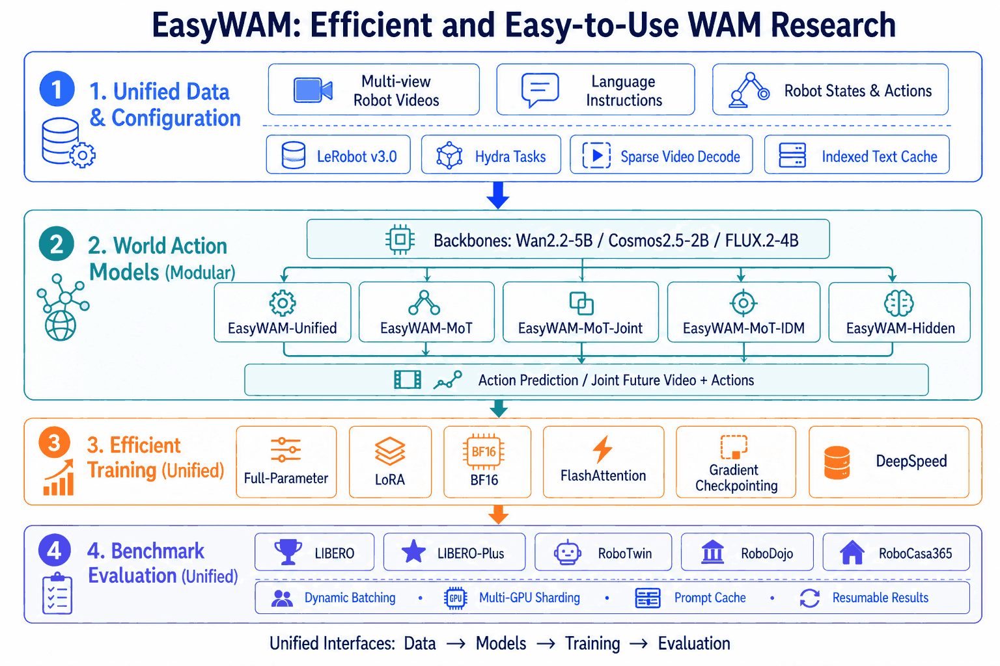

Multiple architectures.
One workflow.
5 architectures (Unified / Hidden / MoT / MoT-Joint / MoT-IDM) × 2 backbones (Wan2.2-5B / Cosmos2.5-2B).
A unified research codebase
EasyWAM connects model implementation, data processing, distributed training and evaluation in one coherent workflow, so ideas travel from notebook to robot faster.
01 / overview
From sparse video decoding to resumable evaluation, EasyWAM makes the entire WAM loop inspectable and repeatable.

5 architectures (Unified / Hidden / MoT / MoT-Joint / MoT-IDM) × 2 backbones (Wan2.2-5B / Cosmos2.5-2B).
20,000-step LIBERO training drops from 14 hr to 6 hr compared to FastWAM.
Full-parameter and LoRA fine-tuning, with LoRA training runnable on a single RTX 4090.
Built-in evaluation infrastructure for LIBERO, LIBERO-Plus, RoboTwin and more.
02 / results
Wan2.2-TI2V-5B backbone · all scores are success rates (%), higher is better.
| Model | Spatial | Object | Goal | Long | Avg. |
|---|---|---|---|---|---|
| EasyWAM-Unified | 99.0 | 99.4 | 99.2 | 98.2 | 99.0 |
| EasyWAM-MoT | 97.8 | 98.4 | 97.6 | 95.6 | 97.4 |
| EasyWAM-Hidden | 99.4 | 100.0 | 97.0 | 97.8 | 98.6 |
| Model | Spatial | Object | Goal | Long | Avg. |
|---|---|---|---|---|---|
| EasyWAM-Unified | 84.0 | 97.8 | 92.0 | 81.2 | 88.8 |
| EasyWAM-MoT | 96.8 | 98.8 | 94.4 | 90.4 | 95.1 |
| EasyWAM-Hidden | 96.8 | 99.4 | 92.6 | 86.8 | 93.9 |
| Model | Background | Camera | Language | Layout | Light | Noise | Robot | Avg. |
|---|---|---|---|---|---|---|---|---|
| EasyWAM-Unified | 55.8 | 33.7 | 93.7 | 80.6 | 92.2 | 50.2 | 71.4 | 67.5 |
| EasyWAM-MoT | 52.8 | 20.6 | 80.4 | 65.2 | 85.1 | 51.5 | 49.7 | 56.8 |
| EasyWAM-Hidden | 56.8 | 49.2 | 95.3 | 81.0 | 90.4 | 58.2 | 77.4 | 72.4 |
LIBERO-Plus perturbs background, camera, language, layout, lighting, noise and robot embodiment.
03 / blog
Long-form analysis from the experiments behind EasyWAM.
04 / contributing
EasyWAM grows through shared recipes, careful benchmarks and practical fixes. Whether you are adding a model, improving a dataloader or writing your first issue, there is a place for your work here.
Open an issue ↗Models · Data · Training · Evaluation
Fork, branch, test and document the change.
Open a pull request. We review with care.
$ git clone github.com/OpenMOSS/EasyWAMContact us and build EasyWAM together — start a discussion ↗